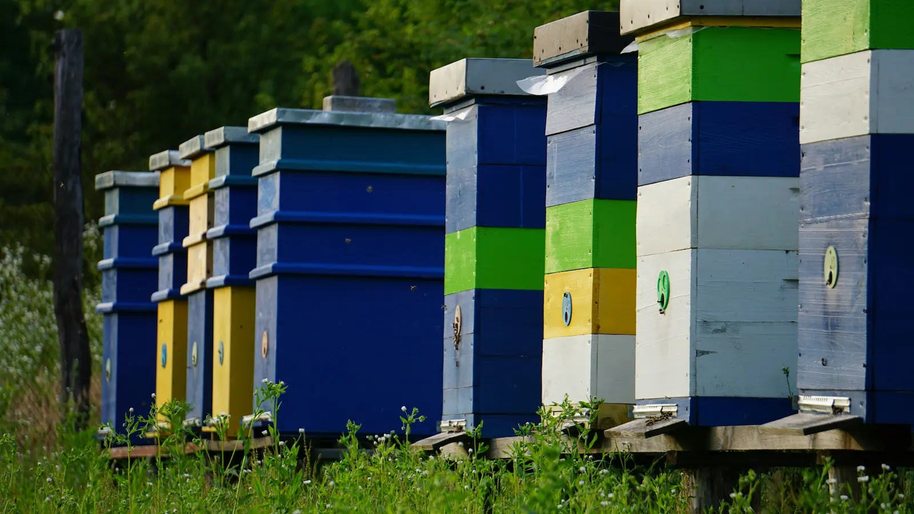

Bee Health Checker (UK) – Symptoms, Likely Causes and What to Do

When something looks “off” in a hive, it helps to start with what you can see: brood pattern, cappings, bee behaviour, and what’s on the floor and frames. This guide is designed as a practical, UK-style symptoms → likely cause → action checker.
Log an inspection in Members Area Medicine Records (UK)
Quick navigation
- How to use this checker
- Red flags (act immediately)
- Symptoms → causes → actions table
- Notes on terms (CCD, Ascosphaera apis, bee louse)
- Download printable checker
- Next steps
How to use this checker
- Start with the most obvious symptom (e.g. perforated cappings, mummified larvae, crawling bees).
- Match it to the closest row in the table and read the likely causes.
- Take the safest action first: isolate, reduce stress, verify, record.
- If you can’t confirm, treat it as “unknown” and seek advice before doing anything irreversible.
Red flags (act immediately)
- Ropy larval remains, sunken/perforated cappings and a strong foul smell (possible AFB).
- Widespread “melted” larvae with an uneven brood pattern (possible EFB).
- Unusual larvae/pupae breakdown you can’t confidently explain.
In these cases, do not move frames or equipment off site, and avoid robbing. Record what you saw, take photos, and contact an inspector / BeeBase guidance route.
Symptoms → likely causes → recommended actions
Use this table as a practical guide. Many issues overlap (e.g. varroa + virus + stress), so more than one row may apply. Your inspection notes matter as much as the symptom itself.
| Observed symptoms | Likely cause(s) | Recommended action (safe first steps) |
|---|---|---|
| Sunken / greasy cappings, perforations, foul smell; larval remains can look “ropy” | American Foulbrood (AFB) (notifiable) | Stop inspection early. Isolate hive. Do not swap frames. Photograph and seek official confirmation. Avoid moving bees/equipment between apiaries. |
| Patchy brood pattern; larvae twisted or “melted”, often before capping | European Foulbrood (EFB) (often notifiable/managed via inspectors) | Reduce stress: ensure food, avoid over-manipulation. Record, photograph, seek advice/inspection. Review hygiene and comb age. |
| White/grey mummified larvae (“chalk mummies”) in cells or on floor | Chalkbrood (caused by Ascosphaera apis) | Improve ventilation and dryness. Replace badly affected comb. Avoid chilling brood. Consider requeening if repeated year-on-year. |
| Hard, dark “stone-like” dead brood; mummified and tough | Stonebrood (Aspergillus spp.) | Improve hygiene and hive conditions (dry, well-sited). Remove affected material where practical. Strong colonies often recover once conditions improve. |
| Deformed/crumpled wings; poor flyers; brood looks stressed; colony dwindles late summer/autumn | Varroa + virus association (esp. Deformed Wing Virus) | Check mite levels promptly. Apply an appropriate treatment for the season. Review IPM plan (monitoring, brood breaks, treatment timing). |
| Bees trembling/shaking, crawling, unable to fly; sudden adult losses | Acute Bee Paralysis Virus (ABPV), Israeli Acute Paralysis Virus (IAPV) (often linked with varroa pressure) | Treat varroa if levels are high. Reduce stress, ensure nutrition. Avoid combining colonies unless you’re confident you’re not spreading a virus problem. |
| Hairless, shiny black bees; trembling; piles of crawling bees at entrance | Chronic Bee Paralysis Virus (CBPV) | Reduce overcrowding and stress. Improve ventilation and feeding if needed. Replace old comb where practical. Keep notes—patterns over time help. |
| Brood dies in sealed cells; queen cells darkened/blackened | Black Queen Cell Virus (BQCV) (can be associated with stress / Nosema) | Focus on colony strength: good nutrition, reduce stressors, manage varroa. Consider requeening if queen performance is affected. |
| Larvae look like a “sac” with fluid; head often raised; larvae turn yellow-brown | Sacbrood virus | Support the colony: feeding, reduce stress, avoid chilling brood. Replace old comb if heavily affected; requeen if persistent. |
| Dysentery staining on hive front/frames; crawling bees; reduced spring build-up | Nosema (N. apis / N. ceranae) | Improve ventilation, reduce damp, check food, replace old comb where possible. Record and monitor—confirm before using any medication route. |
| Weak colony + comb damage: tunnels, webbing, frass; frames collapse when handled | Wax moth (usually consequence of weak colony / poor storage) | Reduce unused space; strengthen colony; remove badly damaged comb. Store comb correctly between seasons. |
| Unusual beetles/larvae; “slimed” comb; fermenting smell; rapid comb damage | Small Hive Beetle (high concern; not established in UK in most contexts) | Treat as suspect and report promptly through official channels. Do not move bees/equipment until guidance received. |
| Small reddish-brown “mini-lobster” insects on adult bees; irritation but usually mild | Braula coeca (bee louse) | Confirm identification first (rarely serious). Record presence and monitor. Focus on general colony health; avoid unnecessary chemical use. |
| Fast brood decline, deformed brood, poor development; suspected exotic mite issue | Tropilaelaps mite (notifiable/high concern if suspected) | Treat as suspect and report promptly. Stop movements of bees/equipment. Follow official guidance. |
| Sudden “empty hive” feeling with queen present; food sometimes left; no single clear culprit | Colony loss / multi-factor decline (often varroa, viruses, starvation, stress, weather, management factors) | Review the timeline: varroa monitoring + treatments, forage gaps, feeding, queen status, wasp pressure, disease signs. Record lessons learned and adjust the plan. |
Download (printable)
If you’d like a version you can keep in your toolbox or take to the apiary, you can download the Bee Health Checker as a printable checklist.
View on Downloads page Download PDF Download Word